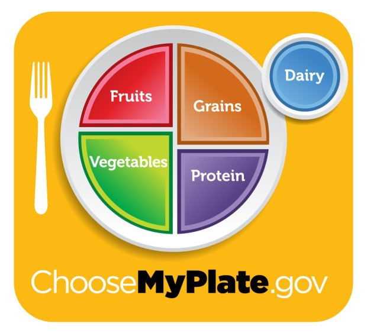

PLANIFIQUE COMIDAS SALUDABLES
Plan some quick and easy go-to meals in advance
Gather up some of your favorite re-invented recipes you've experimented with using
different proteins, veggies, starchy carbs, or seasonings.
Noteworthy meal planning tips
- Plan some dishes around some different cooking methods you may
have tried with various proteins while practicing the Eat Protein
Early and Often habit.
- Remember to check your fridge and pantry and note what items you
already have before heading to the grocery store to avoid purchasing
items that you do not need.
- Make sure that you always have a "live" shopping list with you
when you go to the grocery store. You can then add or subtract foods
from the list and take brief notes as you experiment with various
foods.
- For most meals, your healthy plate should have the portions or
servings sizes as shown in the healthy plate image below.
Or use a small 8 to 9-inch plate for eating meals and snacks
whenever possible for better calorie and portion control.
